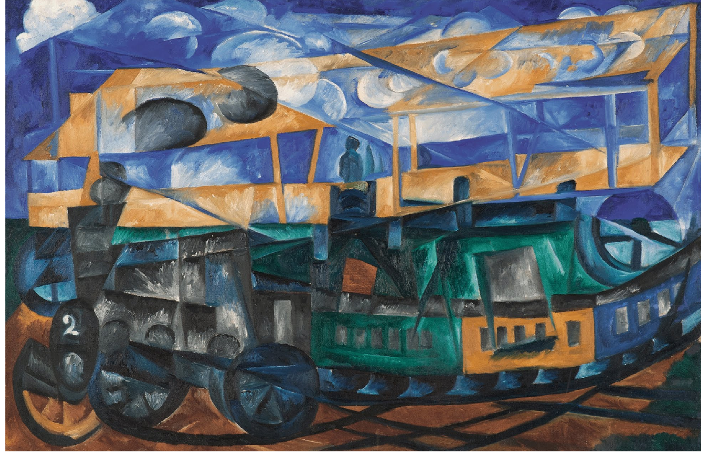

Postmodernism, futurism, and Raku
Learning, and teaching, programming here and now
RakuCon 2022
Yours truly
Programmmer since 1983
üíù Raku üíù Perl, JavaScript, Python...
Professor UGR + senior software engineer @ polypoly
A language to rule them all...

... not really
But we came here to talk about postmodernism
Postmodernism is all around us
But is there a postmodern language?
Postmodernism is
An artistic/cultural movement
Anti-dualist
Claims that language models thought
Anti-dualism promotes pluralism and diversity
Like diversity in the previous repository?
How does it do that?
Also, are you not going to say Raku is the best language?
But postmodernism needs to be made
Starting with futurism
And futurism was first

Embraces sculpture, painting, motion pictures
üìì Postmodernist languages must be a culture
Futurism deploys new languages
... that incorporate the environment

Let's look at current dev environments
Web, concurrency, distributed, containerized
Elm: born to web
import Browser
import Html exposing (Html, Attribute, div, input, text)
import Html.Attributes exposing (..)
import Html.Events exposing (onInput)
main = Browser.sandbox { init = init, update = update, view = view }
type alias Model = { que : String }
init : Model
init = { que = "" }
type Msg = Change String
update : Msg -> Model -> Model
update msg modelo =
case msg of
Change donde -> { modelo | que = donde }
view : Model -> Html Msg
view modelo = div []
[ input [ placeholder "Que", value modelo.que, onInput Change ] []
, div [] [ text (if modelo.que == "Rock" then "en Samil" else "de qué") ]
]Voilà the program
Futurism sez: Language shapes thought
say (١,١,* + *...∞)[١..٣٣].trans( [0..9] => ['٠'..'٩'] )١ ٢ ٣ ٥ ٨ ١٣ ٢١ ٣٤ ٥٥ ٨٩ ١٤٤ ٢٣٣ ٣٧٧ ٦١٠ ٩٨٧ ١٥٩٧ ٢٥٨٤ ٤١٨١ ٦٧٦٥ ١٠٩٤٦ ١٧٧١١ ٢٨٦٥٧ ٤٦٣٦٨ ٧٥٠٢٥ ١٢١٣٩٣ ١٩٦٤١٨ ٣١٧٨١١ ٥١٤٢٢٩ ٨٣٢٠٤٠ ١٣٤٦٢٦٩ ٢١٧٨٣٠٩ ٣٥٢٤٥٧٨ ٥٧٠٢٨٨٧The world is web
import { serve } from "https://deno.land/std@0.144.0/http/server.ts";
import { h, renderSSR } from "https://deno.land/x/nano_jsx@v0.0.32/mod.ts";
function App(url) {
let beat;
const thisUrl = new URL( url.children[0] );
switch (thisUrl.pathname) {
case "/chewing" : beat="Out a rhythm"; break;
case "/rock" : beat="Away beach"; break;
case "/up" : beat="On the roof"; break;
default: beat="Rockaway Beach";
}
return ( Hey, ho, let's go
{beat}
);
}
serve( (req) => {
const html = renderSSR({req.url} );
return new Response(html, { headers: { "content-type": "text/html; charset=utf-8", }, });
});Environment is parallel: Julia obliges
function time_mutations(number,length)
inicioTiempo = time()
fitness = @distributed for i in 0:1:number
indi = random_chromosome(length)
reduce( +, indi)
end
println(fitness)
time()-inicioTiempo
endOpening yourself to the environment
If not tested, it does not work
Unit tests part of the language
+use Test;
use Data::UkraineWar::MoD::Scrape;
#| Fixture with the raw data set scraped from pages
my $war-data = Data::UkraineWar::MoD::Scrape.new( "raw-pages/" );
subtest "CSV works", {
ok($war-data, "Ukraine data loaded");
my $csv-output = $war-data.CSV();
ok($csv-output, "Returns CSV correctly");
is($csv-output.lines()[*- 1].split(", ").elems, 4, "CSV rows correct");
};
Objects open to the environment
console,
IndexedDB
Projects need several languages/DSLs
CI, containers, task managers
Safe languages close apps to the environment
Still environment-conscious, though
deno run --allow-net rock-en-samil.ts Stackoverflow is the documentation of many languages
Modern languages are multi-paradigm
Raku is object-oriented, functional, concurrent, procedural...
But postmodern languages go even further
Community, documentation, ecosystem make the language
Perl was the first post-modern language
As represented by the onion
Raku was conceived as a postmodern language
.jpg#/media/File:Metronome_(Rozanova,_1915).jpg)
By <a
href="https://en.wikipedia.org/wiki/en:Olga_Rozanova"
class="extiw" title="w:en:Olga Rozanova"><span
title="Russian artist (1886-1918)">Olga
Rozanova</span></a> - <a rel="nofollow"
class="external free"
href="http://www.tretyakovgallery.ru/ru/collection/_show/image/_id/2431">http://www.tretyakovgallery.ru/ru/collection/_show/image/_id/2431</a>,
Public Domain, Link
Language (interpreter, syntax)
... opens to the environment (community, ecosystem)
From stackoverflow a Raku in two days (via Liz)
Language design responds to community needs
Postmodern languages live in a postmodern production environment
And postmodernism will probably spawn new post-modern languages
Let pastists languages languish, embrace futurist languages
No language is totally postmodern
But development is postmodern
And Raku is pretty close
Which is why it's impossible to learn development with a single language
You can't even learn a language using a single language
Modern development deconstructs
Applications need to be examined, tested, compiled, deployed...
No to a single language❢